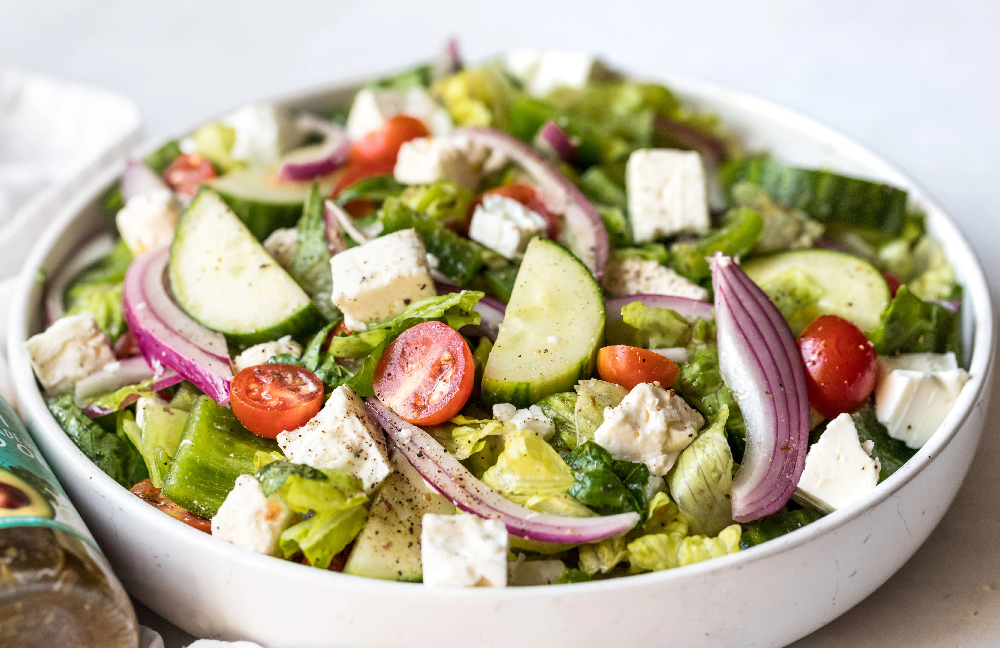

HOW TO MAKE A SALAD

Ingredients
- Lettuce leaves
- Cucumber slices
- Cherry tomatoes
- Red onion
- Olive oil
- Lemon juice
- Salt & pepper
Steps
- Wash and chop all vegetables.
- Combine lettuce, cucumber, tomatoes, and onion in a large bowl.
- In a small bowl, mix olive oil, lemon juice, salt, and pepper to make the dressing.
- Pour the dressing over the salad and toss well.
- Serve fresh and enjoy!
Home